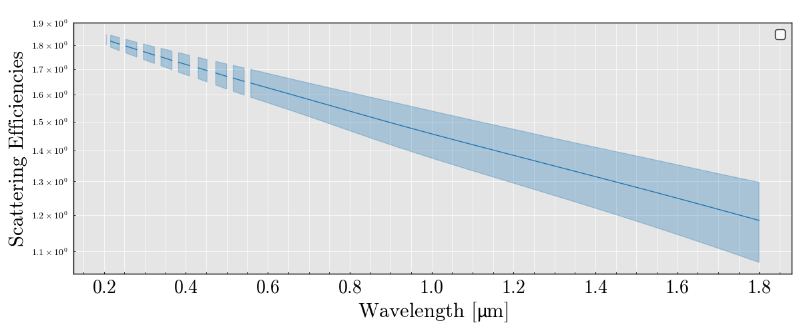

Note
Go to the end to download the full example code
Cylinder: Qsca vs wavelength std#
Importing the package dependencies: numpy, PyMieSim
import numpy as np
from PyMieSim.experiment.scatterer import Cylinder
from PyMieSim.experiment.source import Gaussian
from PyMieSim.experiment import Setup
from PyMieSim.materials import Silver
from PyMieSim import measure
Defining the source to be employed.
source_set = Gaussian(
wavelength=np.linspace(200e-9, 1800e-9, 300),
polarization_value=0,
polarization_type='linear',
optical_power=1e-3,
NA=0.2
)
Defining the ranging parameters for the scatterer distribution
scatterer_set = Cylinder(
diameter=np.linspace(400e-9, 1400e-9, 10),
material=Silver,
n_medium=1,
source_set=source_set
)
Defining the experiment setup
experiment = Setup(
scatterer_set=scatterer_set,
source_set=source_set
)
Measuring the properties
data = experiment.get(measure.Qsca)
Plotting the results
figure = data.plot(
x=source_set.wavelength,
y_scale='log',
std=scatterer_set.diameter
)
_ = figure.show()

Total running time of the script: (0 minutes 0.515 seconds)